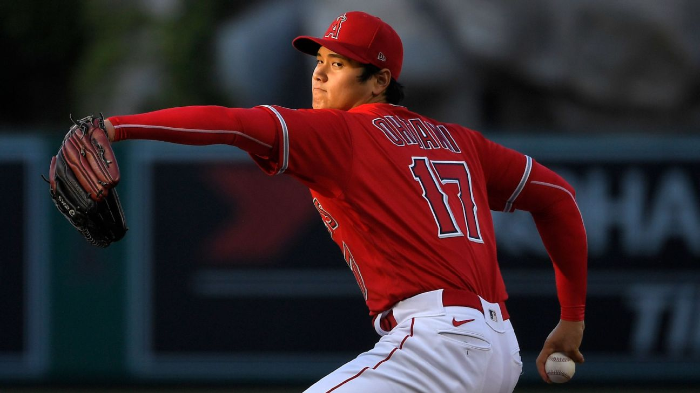

What is FIP?
Fielding Independent Pitching (FIP) is statistic that is a measurement of a pitcher's performance that strips out the role of defense, luck, and sequencing, making it a more stable indicator of how a pitcher actually performed over a given period of time than a runs allowed based statistic that would be highly dependent on the quality of defense played behind him, for example. Certain pitchers have shown an ability to consistently post a lower ERA(Earned Run Average) than their FIP suggests, but overall FIP captures most pitcher's true performance quite well.
Why should you use FIP over ERA?
FIP is an attempt to isolate the performance of the pitcher by using only those outcomes we know do not involve luck on balls in play or defense; strikeouts, walks, hit batters, and home runs allowed. Research has shown that pitchers have very little control on the outcome of balls in play, so while we care about how often a pitcher allows a ball to be put into play, whether a ground ball goes for a hit or is turned into an out is almost entirely out of their control. As a result, a statistic that estimates their ERA based on their strikeouts, walks, hit batters, and home runs while assuming average luck on balls in play, defense, and sequencing is a better reflection of that pitcher's performance over a given period of time. Imagine two pitchers who always throw the same quality pitches to identical hitters, but one pitcher throws in front of a vastly superior defense. The pitcher with the better defense will allow fewer hits, and therefore fewer runs, but the two pitchers performed identically.
2024 NL(National League) FIP Leaders (As of 9/26/2024)
- ATL Chris Sale: 2.09 FIP
- SFG Logan Webb: 2.95 FIP
- PHI Cristopher Sánchez: 3.00 FIP
- SDP Dylan Cease: 3.10 FIP
- STL Sonny Gray: 3.12 FIP
2024 AL(American League) FIP Leaders as of (9/26/2024)
- DET Tarik Skubal: 2.50 FIP
- KCR Cole Ragans: 3.00 FIP
- HOU Framber Valdez: 3.25 FIP
- SEA George Kirby: 3.26 FIP
- KCR Seth Lugo: 3.26 FIP